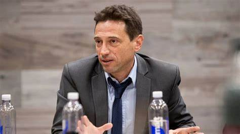

¡Caso Moretti!

En ese expediente, Morelli decidió autodenunciarse, con una presentación a cargo de su abogado, Gastón Marano, donde aseguró ser víctima de “una cama”. Sin embargo, todavía no fue citado a declarar, como testigo o imputado. Vence investiga su causa bajo un fuerte secreto de sumario y busca acumular pruebas para definir la situación del presidente del club. Marano, por lo pronto, no pudo tomar vista de los contenidos del expediente. En paralelo, se realizó un pedido de información a Canal 9, para acceder a los videos originales de la cámara oculta.